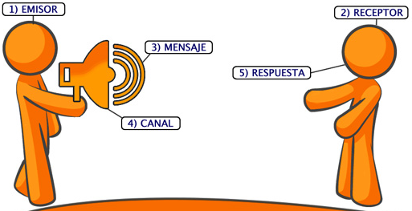

Sistema de Comunicación

¿Qué es un Sistema de Comunicación?
Un sistema de comunicación es un conjunto de elementos que permiten la transmisión de información entre un emisor y un receptor. Los sistemas de comunicación incluyen una serie de componentes como el transmisor, el canal de comunicación y el receptor.
Más información sobre los Sistemas de Comunicación
Componentes de un Sistema de Comunicación
Los principales componentes de un sistema de comunicación incluyen:
Emisor: Dispositivo que genera la señal que se va a transmitir. Ver más Transmisor: Equipo que codifica y transmite la señal. Ver más Canal de Comunicación: Medio por el que viaja la señal (cableado o inalámbrico). Ver más Receptor: Dispositivo que recibe y decodifica la señal. Ver más Destinatario: El receptor final que recibe la información transmitida. Ver más
Leer más sobre los Componentes de un Sistema de Comunicación
Tipos de Sistemas de Comunicación
Existen diferentes tipos de sistemas de comunicación que se clasifican según el medio utilizado para la transmisión de datos:
Comunicación Unidireccional: El flujo de información es en una sola dirección, como la transmisión de televisión o radio. Ver más Comunicación Bidireccional: El flujo de información es en ambas direcciones, como en las llamadas telefónicas o las videoconferencias. Ver más Comunicación Multidireccional: Varios emisores y receptores pueden intercambiar información, como en redes sociales o conferencias en línea. Ver más
Leer más sobre los Tipos de Sistemas de Comunicación
Video Explicativo
Observa este video para obtener una explicación más completa sobre los sistemas de comunicación:
VIDEO